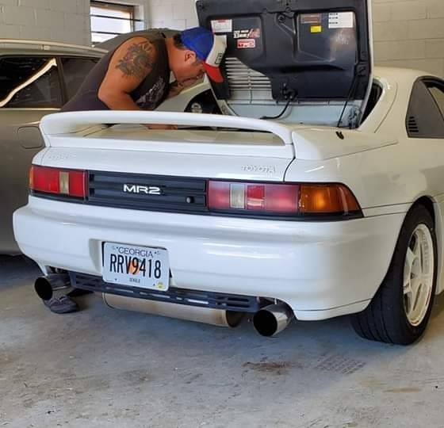

I have been in the IT Industry for 20 years. Initially, I was a Technical Support representative for a webhosting company in Atlanta. Eventually, I began my journey into Leadership and Management.
During this time, I traveled the world and built teams ranging from NOC Analysts to Dev/Engineering Teams.
Over the past few years, I have been longing to catch up on the latest Development techniques as I feel I have fallen behind and lost a certain amount of connection with the teams I usually lead.
This has led me to this Full Stack Development Course.
Follow me on Linked in!